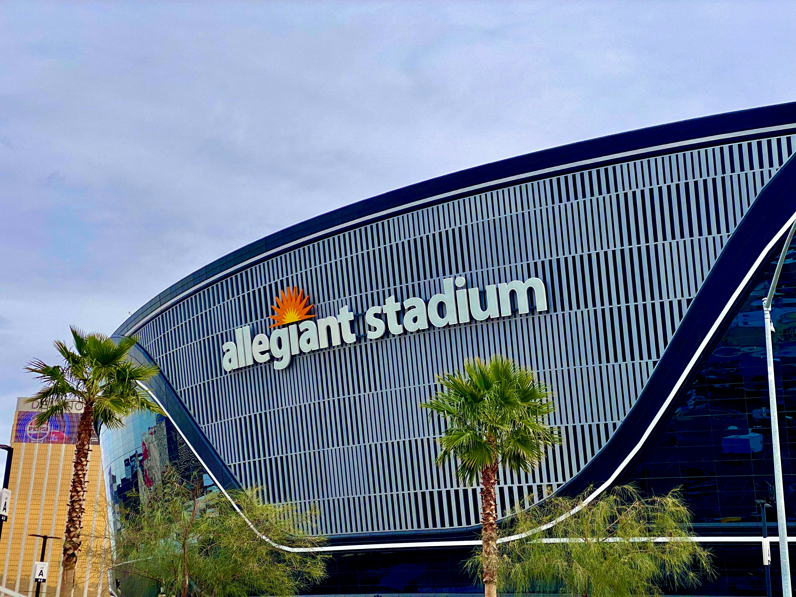
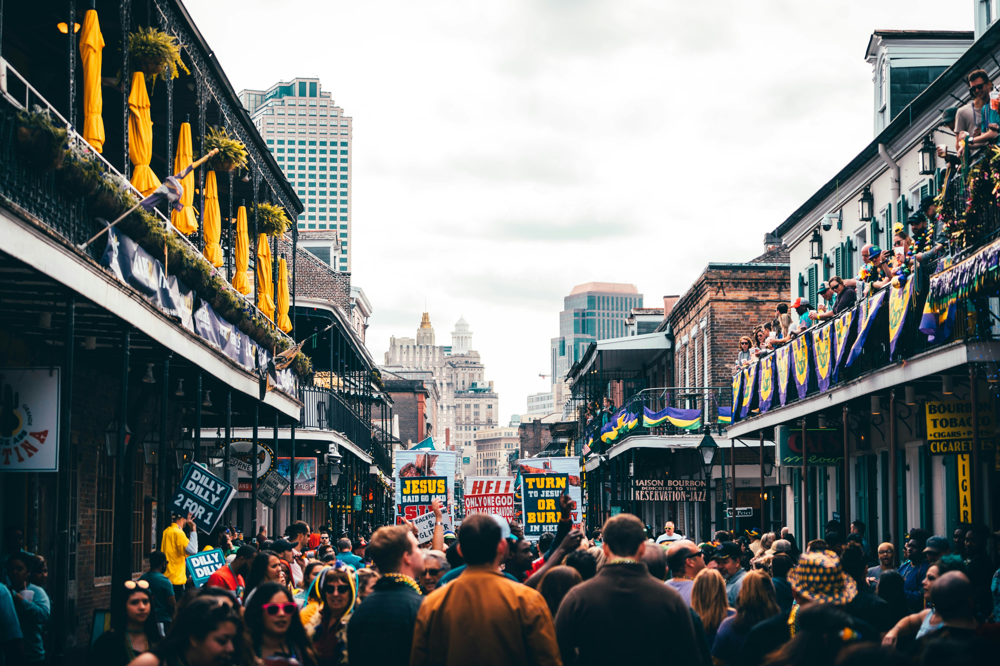
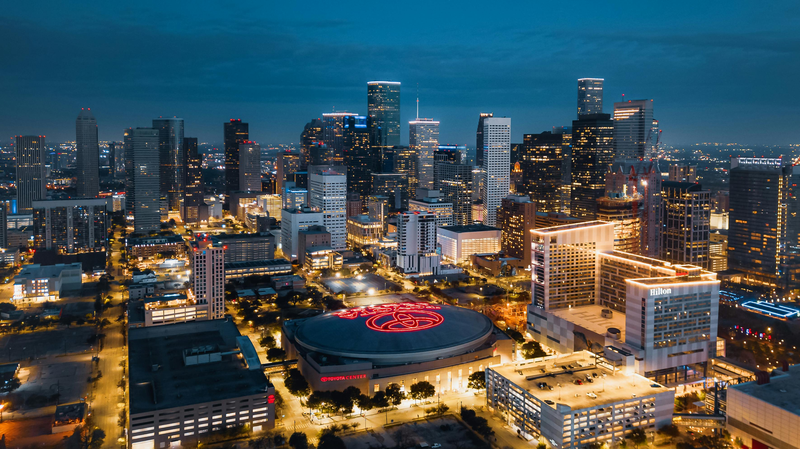

Huksy Stadium
This is when the Huskies won all of their Home Games and played an Undefeated Season. Many Consider this to be the greatest setting in all of College Football

Credit to Zane Lindsay linked Here
This storytelling map shows the road that the Washington Huskies took in order to make it to the National Championship game this past Football Season. This map also shows every single state in the United States that the Huskies had played a football game in. This helps tell the story of the Huskies National Championship run.
This is when the Huskies won all of their Home Games and played an Undefeated Season. Many Consider this to be the greatest setting in all of College Football
Credit to Zane Lindsay linked Here
First, we will go through the Huskies posteason locations. To start of the postseason the Huskies won the Pac-12 Championship in Allegiant Stadium, Las Vegas. They beat Oregon 34-31 to Win the Pac-12 Title!
Credit to David Lusvardi linked Here
The Huskies next were headed to New Orleans to play in Caesars Superdome. Here, they battled against Texas in a 37-31 victory to make it to the National Championship
Credit to Harold Wainwright linked Here
After a long fought season, the Huskies finally made it to the National Championship game. Unfortuantely, the Huskies were not able to walk away with a victory, falling to Michigan 34-13
Photo by juan mendez from Pexels: Here
The Huskies played in a lot of different States throughout the football season. This map shows all of the states that the Huskies play a game in, indicated by being highlighted in purple.